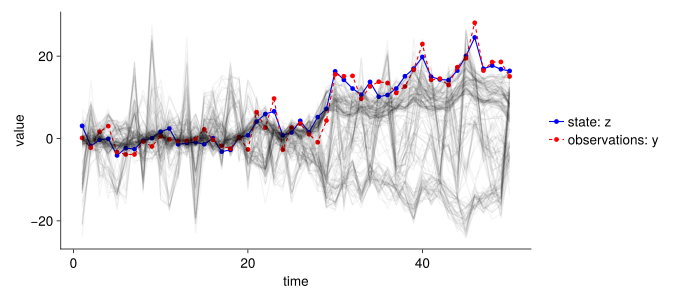

import Random
using CairoMakie
using Distributions
using LinearAlgebra
using LogDensityProblems
using ProtoStructs
using Statistics
using TransformVariables
using TransformedLogDensities
using UnPack
set_theme!(
fontsize = 18,
Axis = (; xgridvisible = false, ygridvisible = false,
topspinevisible = false, rightspinevisible = false),
Legend = (; framevisible = false))Simple State Space Model
- I use the first example the Normal dynamic linear model of: Auger-Méthé et al. (2021)
\[ \begin{align} z_t &= \beta z_{t-1} + \varepsilon_t, &\varepsilon_t &\sim N(0, \sigma_p), \\ y_t &= \alpha z_t + \eta_t, &\eta_t &\sim N(0, \sigma_o), \\ f&(z_t | z_{t-1}, \pmb{\Theta_p}), &t &= 1 \dots, T, \\ g&(y_t | z_t, \pmb{\Theta_o}), &t &= 1 \dots, T \\ \end{align} \]
- observations: \(y_t\)
- (hidden) state: \(z_t\)
- process uncertainty: \(f(z_t | z_{t-1}, \pmb{\Theta_p})\), where \(\pmb{\Theta_p} = \{\beta, \sigma_p\}\)
- observation uncertainty: \(g(y_t | z_t, \pmb{\Theta_o})\), where \(\pmb{\Theta_o} = \{\alpha, \sigma_o\}\)
- (fixed) parameter: \(\pmb{\Theta} = \{\alpha, \beta, \sigma_p, \sigma_o, z_0\}\)
What do we want to estimate?
- the parameter \(\pmb{\Theta}\)
- the states \(\pmb{z}\)
with the joint likelihood of \(\pmb{\Theta}\) and \(\pmb{z}\):
\[ L_J(\pmb{\Theta}, \pmb{z}_{1:T} | \pmb{y}_{1:T}) = \prod_{t=1}^T g(y_t | z_t, \pmb{\Theta_o})f(z_t | z_{t-1}, \pmb{\Theta_p}) \]
marginal likelihood of \(\pmb{\Theta}\):
\[ L_M(\pmb{\Theta} | \pmb{y}_{1:T}) = \int L_J(\pmb{\Theta}, \pmb{z}_{1:T} | \pmb{y}_{1:T}) d\pmb{z}_{1:T} \]
1 Load packages and Makie theme
2 Generate data
Random.seed!(123)
σ_p = 3.0
σ_o = 2.0
β = 1.0
α = 1.0
z₀ = 5.0
ε_t_dist = Normal(0, σ_p)
η_t_dist = Normal(0, σ_o)
ts = 1:50
z = Array{Float64}(undef, length(ts))
y = Array{Float64}(undef, length(ts))
for t in ts
z_lastt = t == 1 ? z₀ : z[t-1]
ε_t = rand(ε_t_dist)
z[t] = β * z_lastt + ε_t
η_t = rand(η_t_dist)
y[t] = α * z[t] + η_t
end
let
fig = Figure(size = (900, 400))
ax = Axis(fig[1, 1]; xlabel = "time", ylabel = "value")
scatterlines!(ts, z, color = :blue, label = "state: z")
scatterlines!(ts, y, color = :red, label = "observations: y", linestyle = :dash)
Legend(fig[1, 2], ax)
fig
end
3 Define the posterior (likelihood and prior)
Which parameters do we need to estimate?
my_priors = (;
α = truncated(Normal(0, 1); lower = 0),
β = Normal(0, 1),
z₀ = truncated(Normal(0, 50); lower = 0),
σ_p = truncated(Normal(0, 1); lower = 0),
σ_o = truncated(Normal(0, 1); lower = 0),
ẑ = [Normal(0, 10) for _ in ts]
)
@proto struct StateSpaceModel
ts::UnitRange{Int64}
y::Vector{Float64}
prior_dists::NamedTuple
nparameter::Int64
transfomation
end
function (problem::StateSpaceModel)(θ)
@unpack ts, y, prior_dists = problem
@unpack α, β, z₀, σ_p, σ_o, ẑ = θ
loglikelihood = 0.0
# process equation
for t in ts
ẑ_last = t == 1 ? z₀ : ẑ[t-1]
loglikelihood += logpdf(Normal(β * ẑ_last, σ_p), z[t])
end
# observation equation
for t in ts
loglikelihood += logpdf(Normal(α * ẑ[t], σ_o), y[t])
end
logprior = 0
for keys in keys(prior_dists)
p_val = θ[keys]
prior = prior_dists[keys]
if p_val isa AbstractVector
prior = prior_dists[keys]
logprior += sum(logpdf.(prior, θ[keys]))
else
logprior += logpdf(prior, θ[keys])
end
end
loglikelihood + logprior
end
function sample_prior(problem)
@unpack prior_dists = problem
θ = NamedTuple{keys(prior_dists)}()
for key in keys(prior_dists)
θ[key] = rand(prior_dists[key])
end
θ
end
my_transform = as((α = asℝ₊, β = asℝ, z₀ = asℝ₊, σ_p = asℝ₊, σ_o = asℝ₊, ẑ = as(Array, length(y))))
problem = StateSpaceModel(ts, y, my_priors, 5 + length(y), my_transform)
ℓ = TransformedLogDensity(problem.transfomation, problem)
posterior(x) = LogDensityProblems.logdensity(ℓ, x)
posterior(rand(problem.nparameter))-1418.94254539426424 Sampling
nsamples = 100_000
nchains = 4
nparameter = problem.nparameter
propσ = fill(0.05, nparameter)
accepted_θ = zeros(nchains, nparameter, nsamples)
accepted = zeros(nchains)
for n in 1:nchains
θ = zeros(nparameter)
post = posterior(θ)
for k in 1:nsamples
## new proposal
proposal_dist = MvNormal(θ, Diagonal(propσ))
θstar = rand(proposal_dist)
## evaluate prior + likelihood
poststar = posterior(θstar)
## M-H ratio
ratio = poststar - post
if log(rand()) < min(ratio, 1)
accepted[n] += 1
θ = θstar
post = poststar
end
accepted_θ[n, :, k] = θ
end
end
burnin = Int(2/4 *nsamples)
accepted_θ
posterior_mat = Array{Float64}(undef, nsamples, nparameter, nchains)
for c in 1:nchains
for i in 1:nsamples
transformed_parameter = collect(transform(problem.transfomation, accepted_θ[c, :, i]))
posterior_mat[i, 1:5, c] .= transformed_parameter[1:5]
posterior_mat[i, 6:end, c] .= transformed_parameter[6]
end
end5 Check convergence
let
draws = 1:nsamples
draw_start = max(Int(round(nsamples * 0.5)), 1)
chains = 1:nchains
fig = Figure(; size = (500, 3500))
for i in 1:nparameter
parameter_name = if i >= length(keys(problem.prior_dists))
z_i = i - length(keys(problem.prior_dists)) +1
"ẑ $(z_i)"
else
string(keys(problem.prior_dists)[i])
end
ax = Axis(fig[i, 1], ylabel = parameter_name, xticklabelsvisible = false)
for c in chains
lines!(ax, draws[draw_start:end], posterior_mat[draw_start:end, i, c])
end
if i == nparameter
ax.xlabel = "draw"
ax.xticklabelsvisible = true
end
ax = Axis(fig[i, 2], yticklabelsvisible = false)
for c in chains
density!(ax, posterior_mat[draw_start:end, i, c])
end
pdist = if i >= length(problem.prior_dists)
problem.prior_dists[length(problem.prior_dists)][1]
else
problem.prior_dists[i]
end
plot!(pdist, color = :red, linewidth = 2)
end
fig
end
6 Predictions
function sample_posterior(data, problem)
nchains, nparameter, nsamples = size(data)
samples_start = Int(round(nsamples * 0.001))
return transform(problem.transfomation, data[sample(1:nchains), :, sample(samples_start:nsamples)])
end
sample_posterior(accepted_θ, problem)
let
fig = Figure(size = (900, 400))
ax = Axis(fig[1, 1]; xlabel = "time", ylabel = "value")
scatterlines!(ts, z, color = :blue, label = "state: z")
scatterlines!(ts, y, color = :red, label = "observations: y", linestyle = :dash)
for i in 1:200
θ = sample_posterior(accepted_θ, problem)
lines!(ts, θ.ẑ, color = (:black, 0.05))
end
Legend(fig[1, 2], ax)
fig
end
References
Auger-Méthé, Marie, Ken Newman, Diana Cole, Fanny Empacher, Rowenna Gryba, Aaron A. King, Vianey Leos-Barajas, et al. 2021. “A Guide to State–Space Modeling of Ecological Time Series.” Ecological Monographs 91 (4): e01470. https://doi.org/10.1002/ecm.1470.